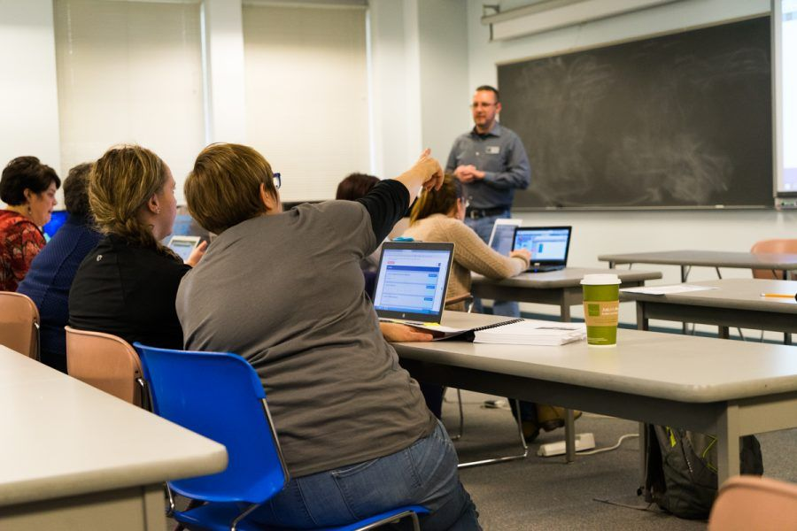
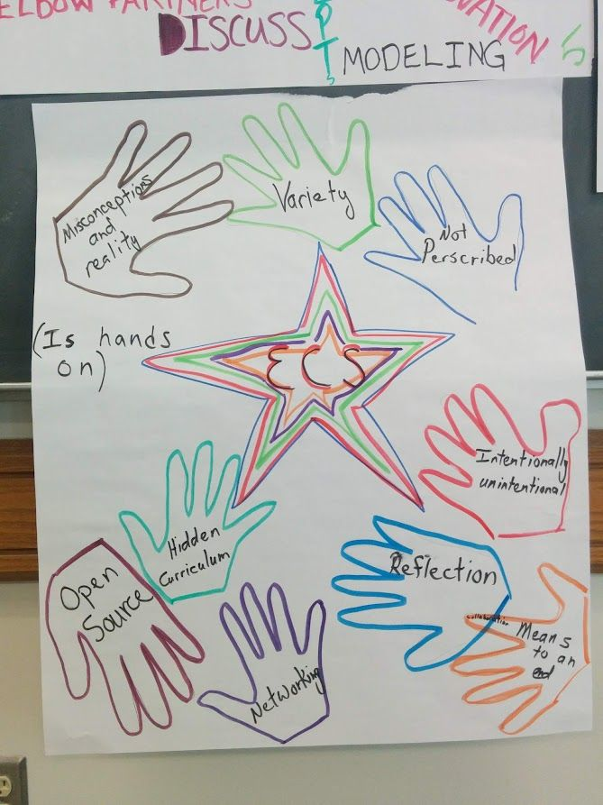
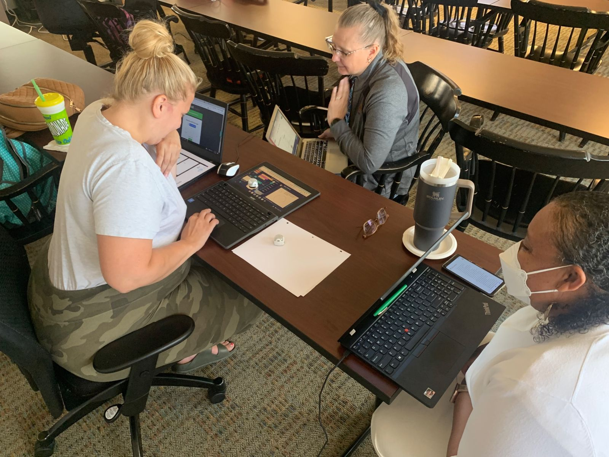
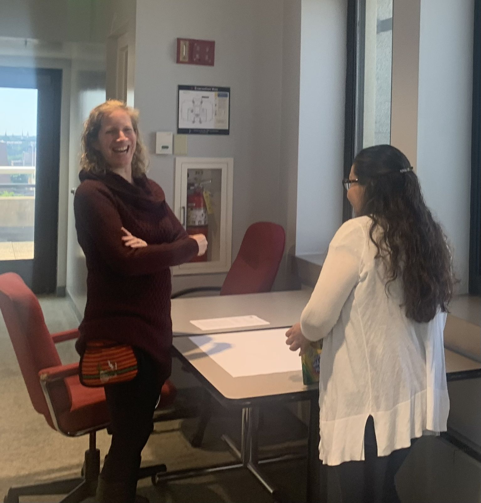

High School · Grades 9–12
Rigorous CS courses for every Wisconsin high school
From a first inquiry-based course to AP, PUMP-CS has prepared Wisconsin high school teachers to offer nationally recognized computer science courses, and helped new teachers earn the credentials to teach them.

Courses
A pathway from introductory CS to AP
Many of these programs pair intensive summer training with coaching, peer networking, and implementation support throughout the school year.

Exploring Computer Science
The inquiry- and equity-based introductory course, often in grades 9–10. ECS is central to Milwaukee Public Schools' strategy for broadening participation in computing.
Code.org CS Principles
A college-level introduction aligned to AP Computer Science Principles, covering programming, data, the internet, and the impact of computing.

Beauty and Joy of Computing
An AP CSP curriculum built on the Snap! block language, with an emphasis on the big ideas and beauty of computing.
Mobile CSP
An AP CSP course in which students learn computing by building apps for mobile devices.
AP Computer Science A
Content and pedagogy for teaching Java-based AP CSA, with support through the school year.
AI in the CS classroom
A new AI strand for the coming summer program. See Summer PD.
Becoming a CS teacher
Credentials for new CS teachers
Wisconsin needs more qualified CS teachers. PUMP-CS research on Wisconsin public high schools has documented the shortage, and its programs have opened routes into the classroom for teachers from other subjects.
- Teaching Computer Science methods course. Offered online or in hybrid format, it helps licensed teachers add a CS endorsement.
- Alternative licensure pathway. A CS alternative licensure route developed with regional partners.
- District certification. The 2016 NSF award aimed to certify 200 Milwaukee Public Schools teachers.
PUMP-CS in Wisconsin high schools
Where PUMP-CS began
PUMP-CS started in 2010 when high school CS teachers, universities, and the Wisconsin Department of Public Instruction planned the state's first CS-specific teacher workshops.
- 2014Two-track teacher preparationAn NSF award with UW–La Crosse prepared in-service and pre-service teachers to teach ECS or CS Principles, regardless of prior CS background.
- 2016Seven MPS high schoolsNew CS courses were running in seven of the largest Milwaukee Public Schools high schools. By early 2018, 62 teachers and more than 1,800 students had taken part in ECS over three school years.
- 2017Advanced courses for allWisconsin's first K–12 CS standards called for every high school student to have access to CS, including advanced courses.
- 2025ECS bootcamp for MPS teachersA nearly $1 million NSF Computer Science for All award adapts a Marquette CS bootcamp into PD for a cohort of 15 ECS teachers over two school years.
In the workshop
Learning to teach high school CS



Standards
Aligned to the standards that guide Wisconsin
Workshops align with the 2026 CSTA PK–12 CS Standards, and connect with Wisconsin's Academic Standards for Computer Science, updated in November 2025. PUMP-CS director Dennis Brylow co-chaired the committee that wrote Wisconsin's first K–12 computer science standards, approved in 2017.
Year-round support
Keep learning after the summer
PUMP-CS will help coordinate ongoing professional learning through the school year, and the Wisconsin Dairyland CSTA chapter plans monthly professional learning community sessions so you can share ideas with other Wisconsin educators. Participant stipends are administered directly by CSTA.
The model grows out of the Virtual Professional Learning Communities PUMP-CS has run for its teacher cohorts, which CSTA members from across the region have attended so they could start similar communities in their own areas.
- Summer workshopHands-on, facilitator-led training with Wisconsin teachers.
- Classroom launchBring the curriculum and tools to your students in the fall.
- Monthly PLC sessionsShare what is working with other Wisconsin educators.
- Follow-up and coachingReturn sessions and peer support to sustain your program.
Dates to be announced
Exact dates, location, and application details will be announced. Questions? Visit the contact page.
Teaching other grades?
See the elementary school (PK–5) and middle school (6–8) pages.